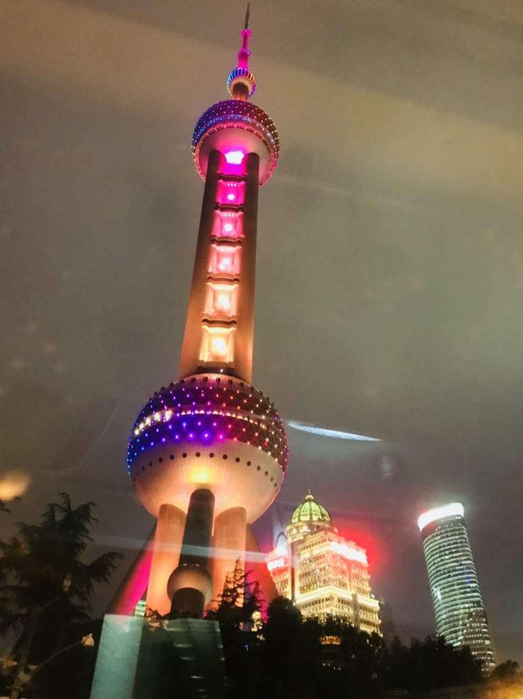
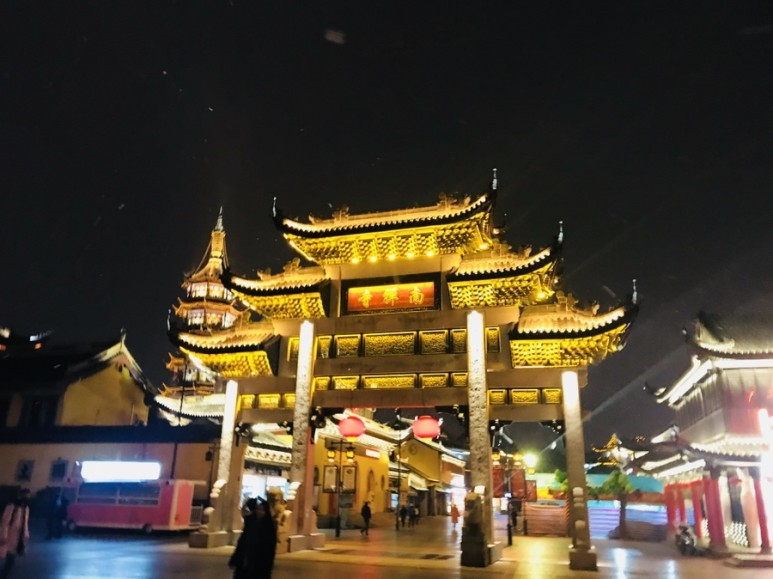

동방명주
상하이를 상징하는 랜드마크. 높다란 기둥을 중심축으로 구슬 세 개를 꿰어 놓은 듯 독특한 외형이 인상적이다. 고층 건물들이 즐비한 푸둥의 루자쭈이 금융 구에 위치한다. 동방명주탑은 미디어 그룹인 동방명주의 방송 수신탑으로 1994년 준공되었다. 하늘을 찌를 듯 우뚝 솟은 탑의 높이는 468m. 건설 당시 캐나다, 러시아, 중국 광저우에 이어 세계에서 네 번째로 높은 건물, 아시아에서 두 번째로 높은 건물이라는 기록을 세웠다.

우연히 지나가다가 본 곳이다. 정말 중국 느낌이 물씬나는 곳이다.
비행기를 타고 중국에서 한국으로 공항에 도착했을 때 찍은 사진이다.
비행기 창문 틈으로 본 일몰이 아주 아름답다.